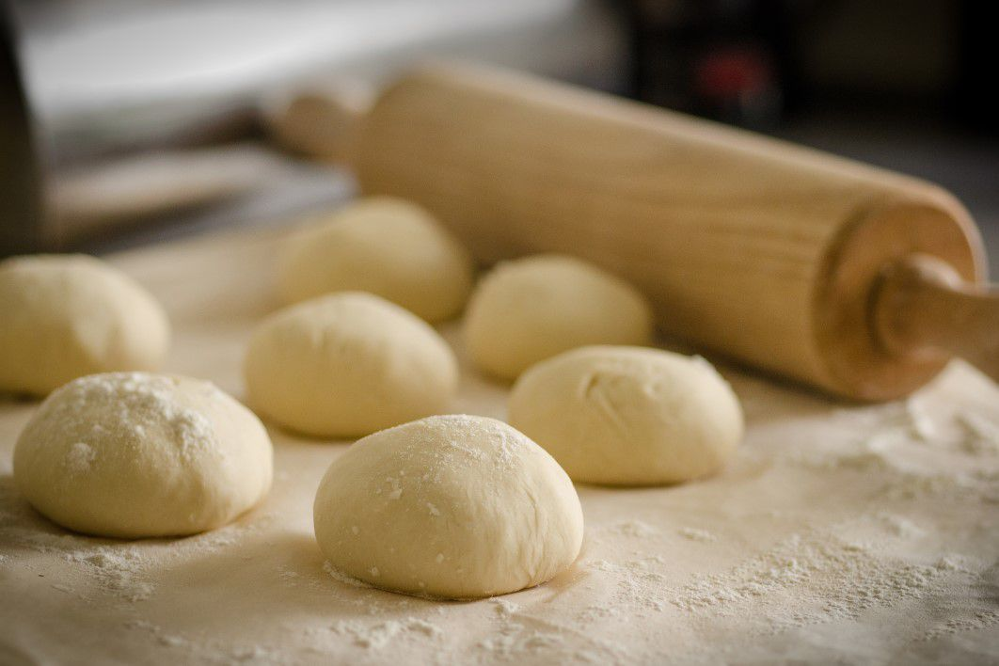

Massa de pizza simples
Esta receita de massa de pizza simples leva poucos ingredientes e, mesmo
assim, fica deliciosamente crocante e macia!
- Tempo: 15min
- Dificuldade: fácil
- Custo: baixo
Ingredientes
- 2 ½ xícaras chá de farinha de trigo
- ¼ de xícara chá de água morna
- 2 colheres sopa de manteiga derretida
- 1 colher chá de fermento químico em pó
- 1 colher chá de sal
- 1 colher chá de açúcar
- 1 ovo
Modo de preparo
-
Em uma tigela, misture todos os ingredientes secos, a manteiga e o
ovo.
-
Quando formar uma farofinha, acrescente a água aos pouquinhos e vá
mexendo até que a massa fique lisa e homogênea.
- Deixe descansar por 10 a 15 minutos.
-
O próximo passo é abrir a massa. Polvilhe um pouco de farinha na
bancada e vá passando o rolo até que fique do tamanho de sua
assadeira.
-
Faça uns furinhos com um garfo e leve por 10 minutos ao forno
pré-aquecido a 200 graus, para que ela fique levemente dourada.
-
Em seguida, recheie com molho de tomate, queijo e outros ingredientes
de sua preferência.
-
Volte ao forno por mais 10 minutos, ou até que o queijo derreta.
Fernando Alves Borges
José Danilo Silva Soares